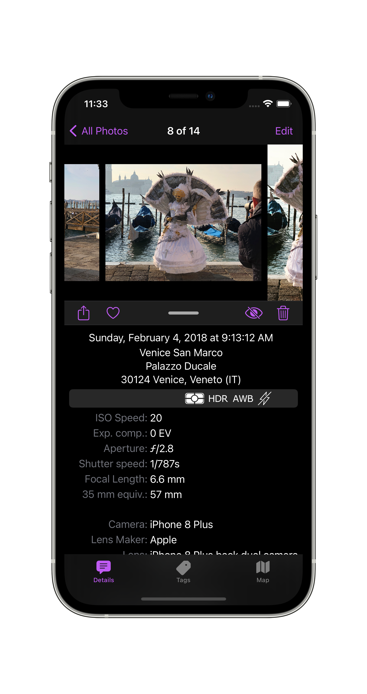

|
PhotInfo 6.50 - Press Kit |
|
PhotInfo 6.50 - Press Kit |
PhotInfo is an app to control all the information (location, date, camera, focal length, etc.) contained in your photos.
Digital cameras (including those in mobile devices) add some metadata to the photos they take. These data are called Exif tags. They provide an opportunity to learn not only the exact date and time of the shoot, but also parameters such as exposure time, shutter speed, image resolution, device model, ISO, focal length, whether the flash was used, etc.
With PhotInfo you can access the images in your iPhone or iPad and view all of their metadata, delete these metadata or modify some of them.
You may delete/modify the image tags to protect your privacy before sharing the image; you may add GPS data if you had forgotten to turn on location services when you took the picture; you may joke by setting improbable location values; you may reset date or location deleted by a previous editing; you may...
A user wrote me that she uses the app in a photography class she teaches in California; another user from Russia, wrote about using the app to figure out which settings make some pictures better than others and to improve his photography technique.
What makes this app unique are:
With PhotInfo you can:
PhotInfo app is in constant development, so new features will be added soon. Download now and stay tuned!
It is (finally) possible to edit more than one photo at a time. This has been a long-awaited request by the user community to save a lot of time in multiple editing.
With version 6.10, PhotInfo arrives on the Mac. The UI is tweaked for the Mac, but he app works like on iPhone/iPad: it only accesses the pictures in your Photos Library (the ones you see in the native Photos app). PhotInfo for Mac shows all the tags contained in these images and let you modifying the main tags.
If you buy PhotInfo on one platform you can download the app on the other platforms for free.

After about 7 years on the store, PhotInfo needed a complete rewrite to keep up with the continuous evolutions of iOS, so the app has been rewritten from Objective C to Swift.
Between PhotInfo 5.00 and 6.00 I wrote PhotInfo NG from scratch, catching up with the PhotInfo's features. Reached the feature parity, PhotInfo switched to the NG code.
| Screenshots | iPhone Xs Max |
| iPhone 8 Plus | |
| iPad 12.9 5th gen | |
| iPad 12.9 2nd gen | |
| on Mac | |
| Video | on YouTube |
| Icon | Hi-Res icon |
| Site | PhotInfo |
| Press Kit | HTML |
| MD |
{kind=link}